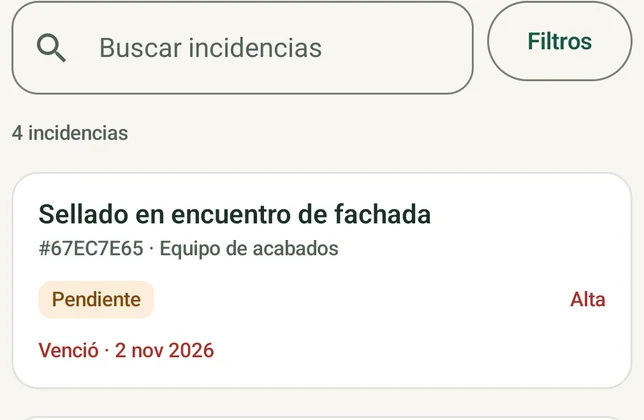

PeldaPlan
Cálculo de escaleras
Calcula peldaños y revisa el diseño de la escalera en 3D.
Doce aplicaciones en Google Play para obra y campo, tareas diarias, juegos de grupo y guías.
Cálculo de escaleras
Calcula peldaños y revisa el diseño de la escalera en 3D.

Informes de obra
Registra incidencias con fotos y exporta el informe a PDF.

Doblado de tubos
Calcula separaciones entre dobleces y pérdidas de alcance.

Cuaderno geológico
Registra afloramientos, medidas y fotos en un cuaderno de campo.
Calcula proporciones directas e inversas y consulta tus cálculos anteriores.
Ver en Google PlayEscanea, crea, guarda y comparte códigos QR y códigos de barras.
Ver en Google PlayJuega en grupo sin conexión y sin moderador. Solo hace falta un móvil.
Ver en Google PlayJuego de deducción social para fiestas y reuniones, con un solo móvil.
Ver en Google PlayConsulta la guía paso a paso de The Secret of Monkey Island.
Ver en Google PlayConsulta la guía paso a paso de Monkey Island 2: LeChuck’s Revenge.
Ver en Google Play